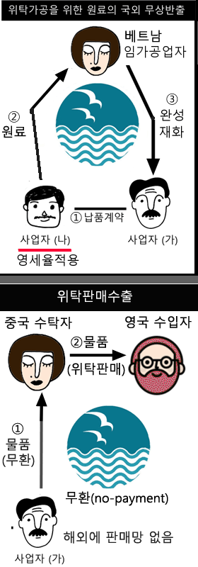

[저질해설 발견] 시행령.(즉시상각의제) 소액수선비＜ Max(600만원, 전기말B/S장부가액 5%) (소액수선비 기준금액을 300만원으로 잘못 표시ㅠㅠ) (국7.2020년 업데이트할 때 같이 수정해서 올릴게용) android_tax_ver:1.05 [문제추가] 국가직7급.2017 [주요 키워드] .키워드 오류 수정 .국가직7.2017에 따른 키워드를 추가 __납세담보, 표준세액공제 __부가가치세 마일리지 __소득세 {결손금, 이월결손금} 공제 __주택임대소득 --- .일부 저질 오타와 키워드를 수정.추가함 아래 영세율관련 참고 그림을 제가 빼먹고 업데이트 했네엽 ㅠㅠ (다음 업데이트 때 추가할게용)  android_tax_ver:1.04 [저질오타 발생] (부과제척기간) ㉢사기나 그 밖의 부정한 행위 __10년(역외거래:15년) (역외거래 10년으로 잘못 표시ㅠㅠ) (빨리 수정해서 업데이트할게용) [문제추가] 국가직7급.2018 [주요 키워드] .키워드 오류 수정 .국가직7.2018에 따른 키워드를 추가 __이월과세, 무조건 기타사외유출 __세무조사 결과통지 예외(폐업 제외) __업무용승용자동차 __세대를 건너띈 상속에 대한 할증과세 android_tax_ver:1.03 ... android_tax_ver:1.02 ...